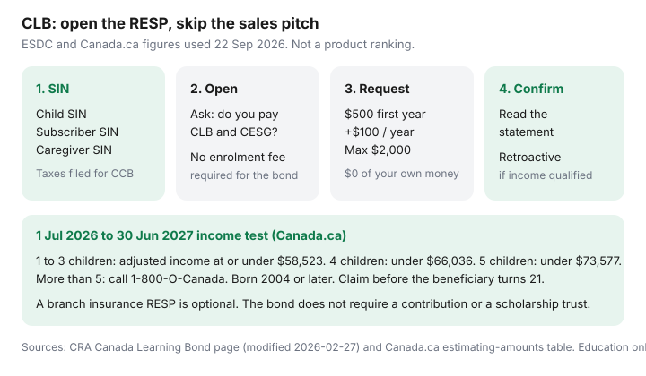

Personal Finance · Canada
How to Open an RESP and Claim the Canada Learning Bond Without Paying Sales Pressure
The Canada Learning Bond is federal money for a child’s education that does not require a family contribution. Employment and Social Development Canada will put an initial $500 into an RESP, then $100 for each further year of eligibility through age 15, up to $2,000. Children born in 2004 or later can qualify. Families skip it because the only RESP conversation they have had was a sales appointment. You can open a plain RESP, ask for the bond, and leave. Date-stamped 22 Sep 2026.
If you can also contribute, the CESG capture plan is the next page. This one stops at getting the bond into an account that does not charge an enrolment fee to receive it.
Disclosure: Brokerage and bank RESP accounts are an offer type. Saving Optimizer may later add partner links. We do not currently claim provider partnerships and we do not rank institutions. Education only — not tax, legal, or investment advice. Eligibility is decided from tax data, not from a branch estimate.
Key takeaways
- No personal contribution is required. Lifetime CLB maximum $2,000: $500 the first eligible year plus $100 a year through age 15. A one-time $25 can be paid with the first bond toward opening costs.
- The child needs a SIN and an RESP. The primary caregiver needs to have filed taxes and to be eligible for the Canada Child Benefit for the years you want. The bond is retroactive.
- For 1 July 2026 to 30 June 2027, Canada.ca: adjusted income at or under $58,523 for 1 to 3 children; under $66,036 for 4; under $73,577 for 5. More than five children: call 1-800-O-Canada.
- A primary caregiver can request the bond until the day before the child turns 18. From 18, the young adult applies. It must be claimed before age 21.
- Ask “Do you administer the Canada Learning Bond?” before you sign. A scholarship trust or an insurance RESP is not required.
CLB eligibility and why no personal contribution is required
CRA’s Canada Learning Bond page (modified 27 Feb 2026) and Canada.ca’s estimating-amounts page agree on the dollars: $500 to start, $100 for each additional eligible year up to and including age 15, lifetime maximum $2,000. Personal contributions are not required. The bond is paid into the RESP, not to the parent. If the child does not pursue post-secondary education, the CLB goes back to the government. That is a reason to keep the account cheap. It is not a reason to leave the money unclaimed.
Eligibility follows the primary caregiver’s adjusted family income and the number of children, for children born in 2004 or later who are residents of Canada. The caregiver must file a return for each year you want included and must be eligible for the Canada Child Benefit. Children in care of a public primary caregiver, where a special allowance is paid, can also qualify. The bond is retroactive: years of eligibility can pile up even if the RESP did not exist yet, through the year the child turns 15. A 14-year-old whose family income qualified in earlier years is not “too late” for the earlier amounts.
| Children | Adjusted family income |
|---|---|
| 1 to 3 | Less than or equal to $58,523 |
| 4 | Less than $66,036 |
| 5 | Less than $73,577 |
| More than 5 | Call 1-800-O-Canada (1-800-622-6232) |
Income thresholds move. The July 2025 to June 2026 band for one to three children was $57,375. Do not reuse an old letter. If you are near the line, file the return and let ESDC test it. A branch employee cannot see the Canada Child Benefit file.
Where to open a low-fee RESP that supports CLB and CESG
Banks, credit unions, and many brokerages offer RESPs that can receive the bond and the CESG. Not every account at those firms can. Online brokers differ. Before you book time, ask one sentence: “Does this RESP administer the Canada Learning Bond and the Canada Education Savings Grant, with no required contribution and no enrolment fee?” If the answer drifts into a managed portfolio or a scholarship pool, you are in a sales conversation. You can leave it.
A no-fee or low-fee RESP that holds the bond in cash or a simple interest option is a complete version of this task. You do not need to pick an investment to receive $500. You do need the promoter to send the request to ESDC. Some providers say they request the bond automatically once the RESP is open and the caregiver details match. Ask which of those is true, and ask for the name of the form or the screen you must finish. The one-time $25 ESDC may pay with the initial $500 is for incidental opening costs. It is not a reason to pay a $500 enrolment fee.
Group scholarship plans and insurance-wrapped RESPs can technically hold a bond and still be the wrong door. Enrolment fees taken from early deposits, sales commissions, and rules about what happens if your child does not attend are the same problems as on the CESG page. For a family contributing $0, an enrolment fee is especially stark: it can consume money that was supposed to be the child’s, or it can oblige contributions you did not come in to make. Decline.

SIN, primary caregiver, and document checklist
Gather these before the appointment or the online application. Missing one of them is the usual reason a “we’ll just open it” visit turns into a product pitch while you wait.
- Social Insurance Number for the child. Apply for it first if you do not have one. An RESP cannot be opened for a beneficiary without a SIN.
- SIN for the subscriber (the person who owns the plan). A parent is the usual subscriber. At the age of majority in the province, a young adult can be their own subscriber and request the bond.
- SIN and identity of the primary caregiver, if that person is not the subscriber. The bond follows the caregiver who receives the Canada Child Benefit, not whoever happens to be in the branch.
- The child’s date of birth and proof the promoter asks for (often a birth certificate).
- Proof the caregiver filed taxes for the years you want tested. CRA My Account is the tidy way to see that a return was assessed. Set-up steps are on CRA My Account.
- Your own note of the question you will ask about CLB and fees, so the meeting has a finish line.
Both spouses do not need to be subscribers. Joint confusion — two plans, two promoters, neither requesting the bond — is worse than one plain plan. The CLB is paid into one RESP for the child.
Avoid bank and branch pressure for insurance-wrapped RESPs
A useful branch visit is short. You open the RESP, you confirm CLB administration, you name the caregiver, you leave with a reference number. Pressure sounds like: the bond is “included” only in the advisor product; you should start a $100 monthly contribution today so the application “looks serious”; insurance on the subscriber is mandatory; the cash RESP “doesn’t earn.” None of those sentences is an eligibility rule.
You can say: “I am opening this only for the Canada Learning Bond. I will not sign a contribution schedule or an insurance form today. If this account cannot request the bond without those, tell me which account can.” Then stop talking. If that location cannot do it, a credit union or another bank’s no-fee RESP is a second stop, not a compromise. Do not sign a group plan “just for now” with a plan to transfer. Transfers out of scholarship trusts are where families discover the enrolment fee was not refundable.
Bring a second adult if you want a witness. You do not need to bring the child. You do need the child’s SIN.
After opening: confirm the CLB hits the account
Processing is not instant. Retroactive years can take longer than a single current year. Put a reminder six to eight weeks out to read the statement. You are looking for a deposit labelled as the Canada Learning Bond, not a guess based on the account balance. The first payment is often $500 plus the $25, with further $100 amounts if earlier years qualified. If the statement shows $0, contact the promoter with the date you opened and ask whether the request was sent. If they say it was sent and nothing arrives, call 1-800-O-Canada and have the child’s SIN process ready — do not email a SIN to a random address.
Common misses: the caregiver named on the RESP is not the person who receives the Canada Child Benefit; a tax year was not filed; the birth year is before 2004; the promoter’s RESP product does not actually request CLB; two plans exist and the request went to an empty one. Fix the fact, then ask again. Do not “solve” a missing bond by contributing money you need for rent.
Annual hygiene so you do not miss CESG later
Once the bond is in, the account can sit. File taxes every year so later $100 amounts and any additional CESG can be tested. When you can contribute, the CESG page’s $208 a month is the next dollar, not a new sales meeting. Keep lifetime contributions under $50,000 per child. Additional CESG, if your income qualifies, applies only when you contribute; the bond does not replace it and does not require it.
Add a row to the same spreadsheet as the CESG tracker: year, CLB received, lifetime CLB (ceiling $2,000), caregiver on file, and the date you last saw the deposit on a statement. At 17, grant room for CESG is ending; the bond’s own yearly $100 already stopped at 15. At 18, if anything is still unclaimed, the beneficiary requests it. Age 21 is the close of the request window. A calendar entry beats a brochure in a drawer.
Sources & date stamps
- CRA, Canada Learning Bond — up to $2,000; $500 plus $100 a year to age 15; no contribution required; $25 with the initial bond; born 2004 or later; apply before age 21; page modified 27 Feb 2026 (read 22 Sep 2026).
- Canada.ca, How much money can be added to an RESP — retroactive CLB, caregiver request until the day before age 18, beneficiary applies from 18, income table for 1 July 2026 to 30 June 2027 (used 22 Sep 2026).
- ESDC contact for the public: 1-800-O-Canada (1-800-622-6232).
- Saving Optimizer — CESG capture plan for households that can contribute after the bond is in place.
Frequently asked questions
Do I have to contribute my own money to get the Canada Learning Bond?
No. ESDC deposits the bond into an RESP. The amount is $500 for the first eligible year plus $100 for each further year of eligibility through age 15, up to $2,000. A one-time $25 may be paid with the first bond toward opening costs.
Who can qualify in the 2026–27 benefit year?
Children born in 2004 or later, with a SIN, named in an RESP. For 1 July 2026 to 30 June 2027, Canada.ca lists adjusted family income at or under $58,523 for 1 to 3 children, under $66,036 for 4, and under $73,577 for 5. The primary caregiver must file taxes and be eligible for the Canada Child Benefit. More than five children: call 1-800-O-Canada.
Is it too late if my child is a teenager?
Not automatically. The bond is retroactive for eligible years through the year the child turns 15. A primary caregiver can request it until the day before the child turns 18. From 18 the young adult applies. The request has to be made before age 21.
Can the bank require a scholarship plan or insurance before they request the bond?
Eligibility does not require either. If a branch will only open an RESP that charges an enrolment fee or wraps insurance, ask which account requests the CLB without those, or open elsewhere. Do not sign a contribution schedule to make an application “look serious.”
How do I know the bond arrived?
Read the RESP statement for a deposit identified as the Canada Learning Bond. Processing, especially retroactive years, can take several weeks. If the balance stays at zero, ask the promoter whether the request was sent, then call 1-800-O-Canada if it was.